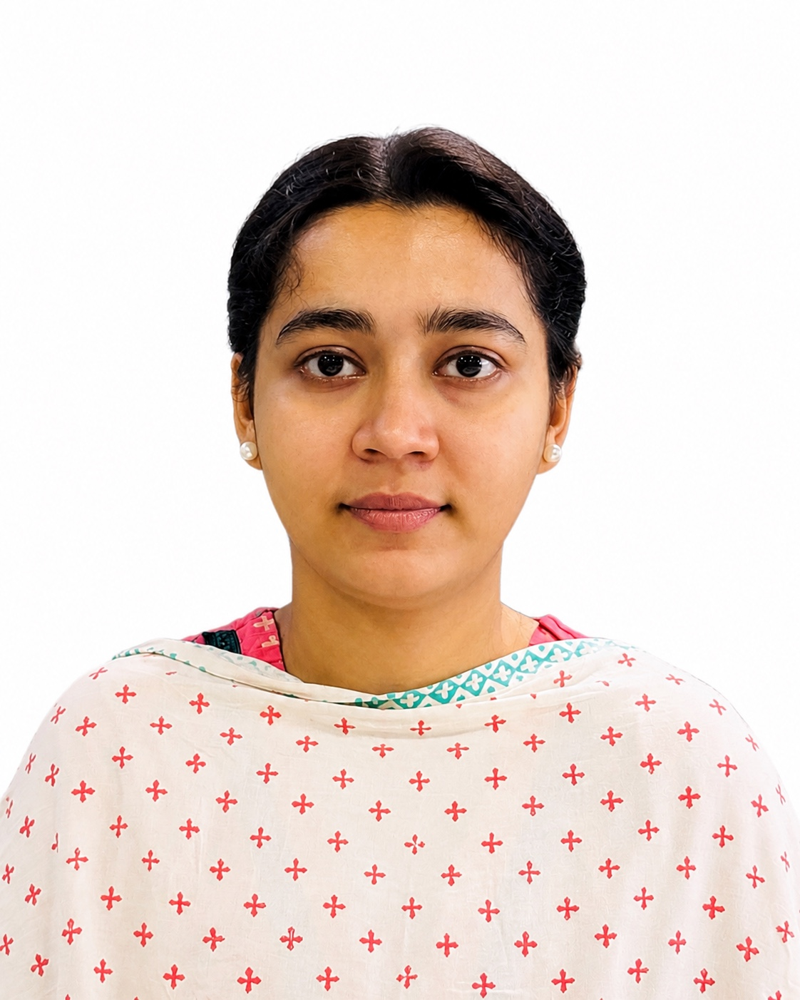

Artificial Intelligence
AI concepts, intelligent systems and AI-based solutions.
HELLO, I'M
A Computer Science and Engineering graduate specializing in Data Science, passionate about Artificial Intelligence, Machine Learning, Software Development and data-driven technologies.

ABOUT ME
I am a motivated Computer Science and Engineering graduate specializing in Data Science from East West University.
My interests include Artificial Intelligence, Machine Learning, Deep Learning, Software Development and data-driven technologies. I enjoy applying programming and analytical skills to academic projects and practical problems.
I am interested in advanced study and in developing practical, innovative software solutions and intelligent systems.
EXPERTISE
AI concepts, intelligent systems and AI-based solutions.
Machine Learning algorithms and predictive modelling concepts.
Data analysis methodologies, statistical analysis and data-driven problem solving.
Neural-network based approaches and deep learning projects.
Python, C++, JavaScript and programming fundamentals.
HTML, CSS, JavaScript and React.js for modern web interfaces.
EDUCATION
Major / Specialization: Data Science
CGPA: 3.00 / 4.00Science
GPA: 5.00Science
GPA: 4.91UNDERGRADUATE THESIS
Research work focused on a multimodal Artificial Intelligence agent framework for behavioral trait detection in children.
SELECTED WORK
Lung and Colon Cancer Detection Using a Custom VGG-style Convolutional Neural Network.
An academic software project focused on developing a Tour and Travel Management System.
Multi-Objective Optimization of Vehicle Speed for Simultaneous Energy Conservation and Travel Time Reduction using LSTM and NSGA-2.
GET IN TOUCH
Open to academic, research and technology-related opportunities.
jannatulferdousafrin060@gmail.com